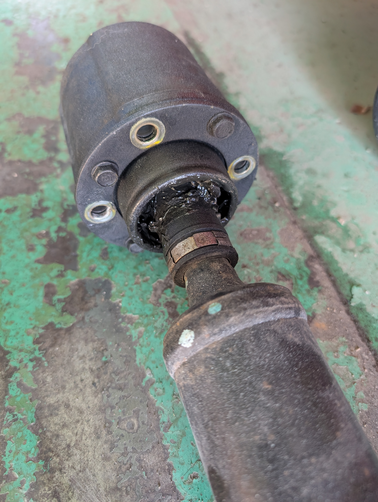

HA4 アクティ｜プロペラシャフトのブーツ破れ
車種：ホンダ アクティ
型式：HA4
作業箇所：プロペラシャフト
作業内容：プロペラシャフトASSY交換
確認した症状
プロペラシャフトのブーツが破れており、 内部のグリスが周辺に飛び散っている状態

部品の確認
修理書を確認すると、プロペラシャフトを分解して ブーツを交換できる構造でした。
しかし、現在は補修部品が生産終了となっており、 ブーツ単体での交換ができない状況。
修理内容
補修部品が入手できないため、 プロペラシャフトASSYで交換。
気になったこと
修理書上では分解して補修できる構造だったので、 当時の修理ブーツだけ交換していたのかな？ シャフトごと交換するしかないのが残念なところです。